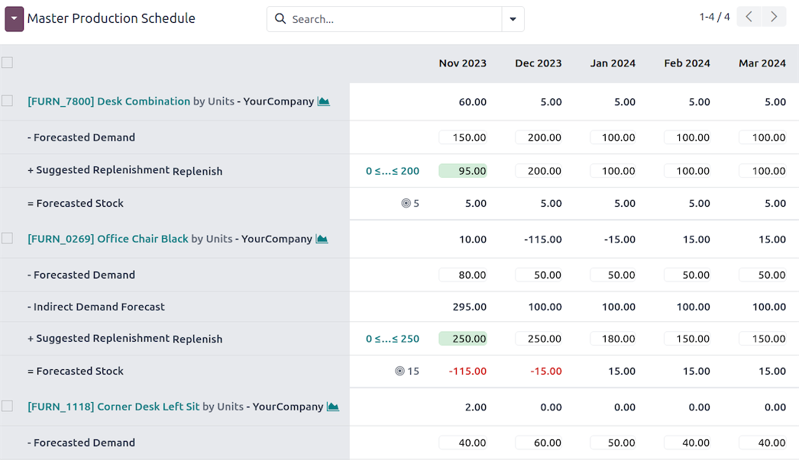
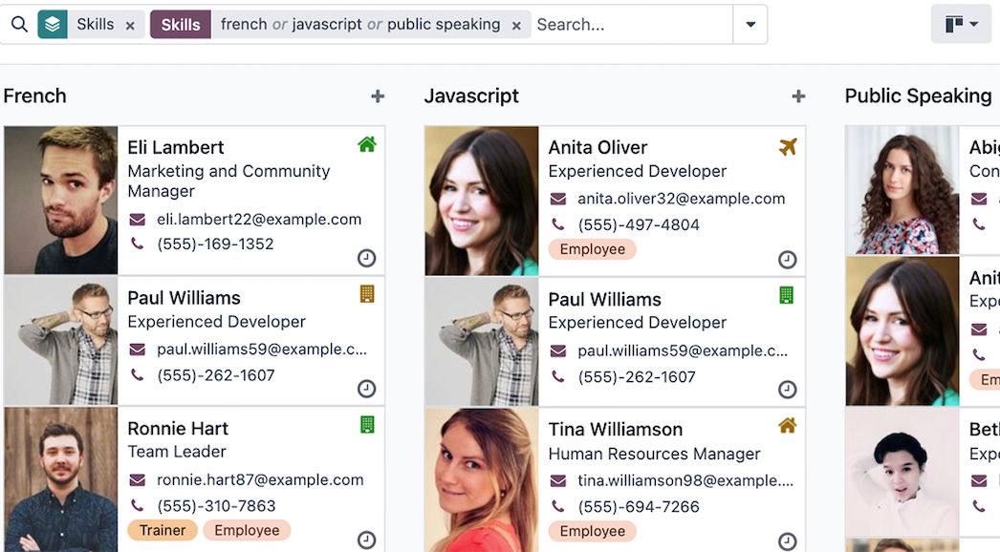
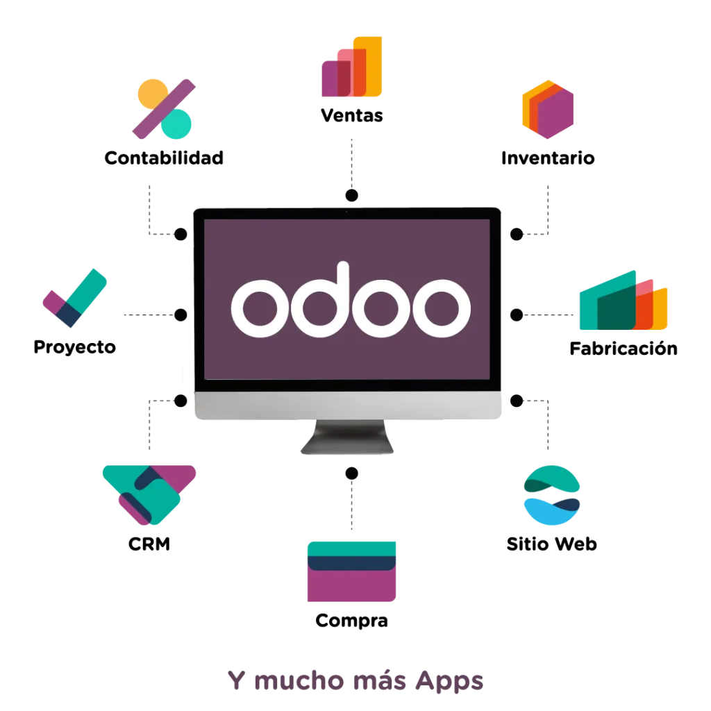

Tu operación ya no puede seguir corriendo en Excel y herramientas que no se hablan entre sí.
Implementamos Odoo para ordenar tu operación, conectar ventas, compras, inventario y finanzas en un solo sistema, y darte la visibilidad que necesitas para dirigir con más control y menos intervención constante.
Hay un punto en que operar como siempre empieza a costar demasiado.
Muchas empresas crecen con lo que tienen: Excel, WhatsApp, sistemas sueltos y personas clave que sostienen demasiado conocimiento en la cabeza. Durante un tiempo, eso funciona. Pero llega un momento en que el volumen crece, los errores se multiplican y la fricción operativa consume tiempo y dinero que deberían ir al negocio.
Áreas desconectadas
Ventas, compras e inventario no están conectados y hay que conciliar información a mano. Cada área opera en su propio mundo.
Doble captura y retrabajo
El equipo pierde tiempo capturando la misma información en múltiples sistemas y corrigiendo errores evitables que surgen del proceso manual.
Dependencia de personas clave
Dependes de una o dos personas que saben demasiado y sin ellas la operación se frena. Eso no es escalable ni sostenible.
Sin visibilidad en tiempo real
No sabes en tiempo real qué hay en inventario, qué se debe cobrar o cuánto está entrando. Las decisiones se toman a ciegas.
El negocio creció, los procesos no
El volumen y la complejidad aumentaron pero los procesos siguen siendo los mismos de cuando la empresa era más pequeña. Se siente.
El problema no es falta de esfuerzo. Es falta de estructura. Y eso sí tiene solución.
Odoo no es solo un sistema. Es el orden que tu operación necesita.
Odoo es un ERP modular de clase mundial: una plataforma que centraliza y conecta todos los procesos del negocio en un solo lugar. A diferencia de sistemas rígidos y costosos como SAP, Odoo está diseñado para adaptarse a la realidad de empresas medianas y PyMEs.
Su arquitectura modular significa que no compras todo de golpe: activas los módulos que tu empresa necesita hoy y escalas conforme creces. Todo integrado de forma nativa, sin conectores externos ni desarrollos complicados.
Integración nativa entre áreas
Cuando se confirma una venta, automáticamente se reserva inventario, se programa la entrega y se prepara la factura. Sin intervención manual, sin riesgo de error por transferencia entre sistemas.
Implementación en semanas, no en años
A diferencia de ERPs corporativos que toman meses o años, Odoo tiene un tiempo promedio de implementación de cuatro meses con retorno de inversión visible antes de los 18 meses.
Flexible y escalable
Empiezas con los módulos que necesitas hoy y agregas funcionalidad conforme el negocio crece. No pagas por lo que no usas y no quedas atrapado en un sistema que no se adapta.
Compatible con México: Odoo cuenta con localización para México: facturación electrónica CFDI, cumplimiento con disposiciones del SAT y configuraciones adaptadas al entorno fiscal local.
Una plataforma para toda la operación.
Odoo cuenta con más de 80 módulos nativamente integrados. No hay necesidad de conectores externos, APIs adicionales ni presupuestos de integración: todo trabaja junto desde el inicio.
Módulos más utilizados — selecciona uno para ver cómo funciona
Pipeline comercial con visibilidad completa
Gestiona prospectos, oportunidades y clientes en un solo lugar. Trazabilidad del proceso comercial de principio a fin, forecast confiable y sin perder oportunidades por falta de seguimiento.
- ✦ Pipeline visual de oportunidades con etapas personalizables
- ✦ Automatización de actividades de seguimiento
- ✦ Integrado nativamente con Ventas y Facturación
Cotizaciones profesionales y ciclo comercial completo
Desde la cotización hasta la entrega y factura, todo en un flujo continuo. Plantillas de cotización, precios por cliente, confirmación de pedidos automática y visibilidad del ciclo completo.
- ✦ Cotizaciones y pedidos en tiempo real
- ✦ Reportes comerciales y seguimiento de clientes
- ✦ Integrado con inventario y facturación automática

Facturación electrónica CFDI integrada
Genera facturas electrónicas CFDI directamente desde Odoo, sin sistemas externos. Timbrado automático, cancelaciones, notas de crédito y cumplimiento con las disposiciones del SAT en México.
- ✦ CFDI 4.0 y cumplimiento SAT
- ✦ Cuentas por cobrar y por pagar centralizadas
- ✦ Integrado con contabilidad sin doble captura
Cierre de mes sin retrabajo ni conciliaciones manuales
La contabilidad de Odoo se alimenta automáticamente de las operaciones del negocio. Cada venta, compra y pago genera el asiento contable correspondiente, eliminando la doble captura y los cierres lentos.
- ✦ Conciliación bancaria automática
- ✦ Reportes financieros en tiempo real
- ✦ Localización fiscal para México
Control de stock en tiempo real y trazabilidad total
Visibilidad completa de tu almacén: qué hay, dónde está y qué está comprometido en cada momento. Soporte para múltiples almacenes, alertas de reabastecimiento y trazabilidad de lotes y números de serie.
- ✦ Stock en tiempo real con movimientos automáticos
- ✦ Trazabilidad por lote, serie y fecha de caducidad
- ✦ Múltiples almacenes y rutas logísticas

Producción planificada, trazable y sin cuellos de botella
Gestiona órdenes de producción, listas de materiales y capacidad de planta desde un solo lugar. Trazabilidad de insumos de principio a fin y visibilidad del estado de cada orden en tiempo real.
- ✦ Órdenes de producción y listas de materiales (BOM)
- ✦ Planificación de capacidad y centros de trabajo
- ✦ Integrado con compras e inventario

Gestión de personas integrada con toda la operación
Desde empleados y asistencia hasta vacaciones y nómina. Todo conectado con el resto del sistema para que RH no opere como una isla separada del negocio.
- ✦ Gestión de empleados, contratos y expedientes
- ✦ Control de asistencia, vacaciones y ausencias
- ✦ Reclutamiento, evaluaciones y nómina

Y muchos más — más de 80 módulos integrados de forma nativa.
Odoo cubre prácticamente cualquier área del negocio. No implementamos todo de golpe — en el diagnóstico definimos qué módulos tienen sentido para tu empresa hoy y cuáles pueden activarse después conforme creces.

¿Cuál de estas situaciones describe la tuya?
Dueño o director de PyME
"La empresa creció, pero el control no creció con ella."
Más personas, más volumen, más fricción. Necesitas que la operación funcione con orden y visibilidad sin depender de ti para resolver cada cosa.
Empresas de 15 a 100 colaboradores en comercialización, distribución, manufactura ligera o servicios B2B.
Agendar diagnóstico arrow_forwardDirector de Administración y Finanzas
"El cierre de mes sigue dependiendo de retrabajo y correcciones."
La doble captura, las conciliaciones manuales y los errores entre áreas consumen tiempo y energía que debería ir a analizar, no a corregir.
Típico en empresas que ya necesitan más integración entre operación y finanzas.
Agendar diagnóstico arrow_forwardGerente o responsable de operaciones
"No tenemos visibilidad de lo que pasa en inventario, compras ni entregas."
Cada área opera con su propio sistema y la información no fluye. Necesitas trazabilidad real de principio a fin, sin tener que preguntar a cada persona qué está pasando.
Frecuente en empresas con distribución, logística o manufactura que crecieron sin sistematizar la operación.
Agendar diagnóstico arrow_forwardDirector Comercial
"El equipo vende, pero no hay trazabilidad real del proceso comercial."
Las cotizaciones se generan en un lado, el seguimiento en otro y la facturación en otro. Sin integración, se pierden oportunidades y el forecast no es confiable.
Aplica cuando el volumen comercial ya superó lo que permite manejar una hoja de cálculo o herramientas desconectadas.
Agendar diagnóstico arrow_forwardUna implementación bien hecha desde el principio.
Appunto implementa Odoo con la metodología Quickstart — el enfoque oficial de Odoo para implementaciones ágiles en PyMEs y empresas medianas.
¿Qué es Quickstart?
Es la metodología estandarizada de Odoo que prioriza velocidad, mejores prácticas y adopción real. Usa configuraciones probadas en miles de empresas para llevar a la empresa a go-live en semanas — sin customizaciones innecesarias que alargan el proyecto y elevan el riesgo.
Diagnóstico operativo
Antes de proponer cualquier módulo, entendemos cómo opera tu empresa: qué procesos tienes, dónde están las fricciones más costosas, qué datos necesitas ver y qué no puedes perder en la transición. Este paso define el alcance real del proyecto y el plan de implementación por fases.
Diseño de la solución
Definimos qué módulos implementar, cómo configurarlos para tu operación específica y cuál es la secuencia de activación. Bajo la metodología Quickstart priorizamos configuraciones estándar sobre desarrollos a medida: menos riesgo, más velocidad, igual de efectivo.
Configuración e implementación
Configuramos Odoo según los procesos definidos, migramos los datos existentes (clientes, productos, inventarios, históricos), integramos con otros sistemas si aplica y realizamos las pruebas necesarias antes de salir en vivo. Con rigor técnico y atención al detalle en la calidad de los datos.
Capacitación del equipo
Capacitamos a los usuarios clave por área — no una sesión genérica del sistema, sino capacitación adaptada a cómo cada rol va a usar Odoo en su día a día. Vendedor, almacenista, contador y director operan de forma distinta y se capacitan de forma distinta.
Acompañamiento post go-live
Nos quedamos después del arranque. Resolvemos ajustes, apoyamos la adopción y actuamos como aliado operativo a largo plazo. Porque una implementación exitosa no termina cuando el sistema queda encendido — termina cuando el equipo opera con él de forma autónoma y el negocio mejora.
Hay muchos ERPs. La pregunta es cuál tiene sentido para tu empresa hoy.
No recomendamos Odoo porque es lo que vendemos. Lo recomendamos cuando es la herramienta correcta para el problema y el tamaño de la empresa.
Diseñado para crecer con la empresa
Empiezas con los módulos que necesitas y agregas funcionalidad sin cambiar de sistema. No te quedas atrapado en una plataforma que dejó de servir porque el negocio creció.
Costo accesible sin sacrificar funcionalidad
A diferencia de SAP o NetSuite, Odoo ofrece funcionalidad de nivel empresarial a una fracción del costo. El retorno de inversión promedio se alcanza antes de los 18 meses.
Integración nativa, sin conectores externos
Todos los módulos de Odoo están diseñados para funcionar juntos. No necesitas invertir en integraciones adicionales ni mantener puentes entre sistemas distintos.
Implementación más rápida
El tiempo promedio de implementación de Odoo es de cuatro meses, frente a seis o más de otras plataformas. Menos tiempo en modo proyecto, más tiempo generando valor.
Compatible con requisitos fiscales en México
Odoo cuenta con localización para México: facturación electrónica CFDI, cumplimiento con disposiciones del SAT y configuraciones adaptadas al entorno fiscal local.
Implementar Odoo no es difícil.
Implementarlo bien, sí.
La diferencia entre una implementación que funciona y una que nadie termina usando no está en el software. Está en quién lo implementa, cómo entiende el negocio y qué tan bien acompaña la adopción.
No instalamos Odoo y desaparecemos.
No vendemos más módulos de los que la empresa necesita hoy.
No prometemos implementaciones en dos semanas que luego se alargan seis meses.
Si en el diagnóstico encontramos que tu empresa todavía no está lista para una implementación completa, te lo decimos antes de empezar. Porque una mala implementación cuesta más, en tiempo y en dinero, que una buena consultoría desde el inicio.
Diagnóstico antes que demo
No empezamos mostrándote lo que puede hacer Odoo. Empezamos preguntando qué está fallando en tu operación hoy.
Configurado para tu realidad
No usamos el mismo setup para todos. Cada empresa tiene su operación, sus reglas y sus procesos. La implementación lo refleja.
Adopción real, no solo instalación
Un ERP que nadie usa es peor que no tener uno. Capacitamos, acompañamos y medimos que el equipo lo adopte de verdad.
Empresas que operan con más orden y control.
"Llevábamos años operando con Excel y cada cierre de mes era un caos. Después de implementar Odoo con Appunto, el inventario está actualizado en tiempo real, las facturas salen solas y finalmente puedo ver qué está pasando en el negocio sin tener que preguntar a cinco personas."
— Dueño fundador, empresa de distribución, Bajío.
"Lo que más me sorprendió fue que Appunto entendió nuestra operación antes de proponer cualquier cosa. No llegaron con una propuesta lista: llegaron con preguntas. Eso marcó la diferencia en cómo quedó configurado el sistema."
— Directora Administrativa, empresa de servicios B2B, Querétaro.
¿Tiene sentido conversar sobre tu operación?
Una sesión de diagnóstico de 30 minutos, sin costo y sin compromiso. Revisamos cómo está operando tu empresa hoy, dónde están las fricciones más costosas y si Odoo tiene sentido para tu caso. Si no lo tiene, también te lo decimos.